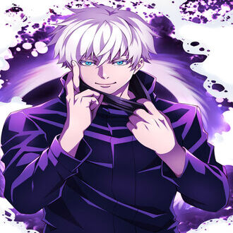
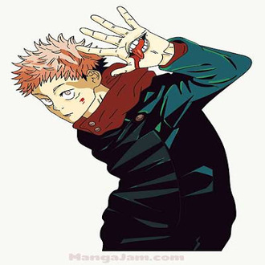
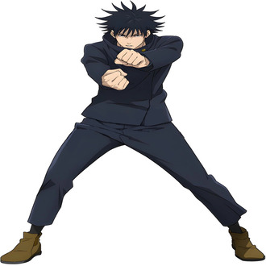
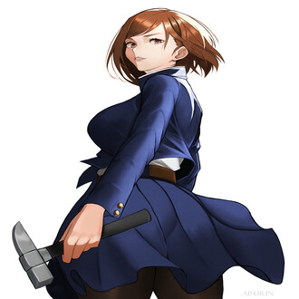
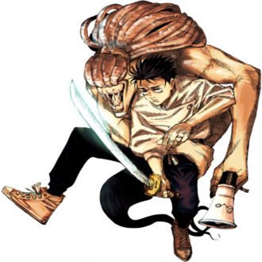
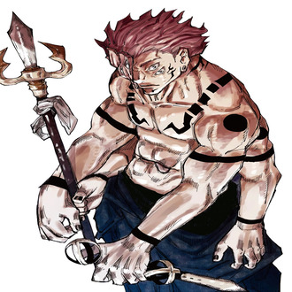

-
Satoru Gojo
Descrição
**Satoru Gojo** é um mestre jujutsu excepcionalmente poderoso da série "Jujutsu Kaisen". Com sua personalidade excêntrica e confiante, ele é conhecido por sua habilidade única na Técnica da Expansão Ilimitada, que lhe permite manipular espaços e distorcer a realidade, tornando-o praticamente invencível em batalha. Sua presença é marcada por um lenço que cobre seus olhos, adicionando um ar de mistério à sua figura carismática. Ele é tanto mentor quanto protetor dos protagonistas, sempre buscando treinar e proteger seus alunos enquanto luta para manter a humanidade segura dos males que a ameaçam.
-
Yuji Itadori
Descrição
Yuji Itadori é o protagonista de "Jujutsu Kaisen", um estudante do ensino médio com coragem inabalável e um coração gentil. Após se tornar hospedeiro de Sukuna, o Rei das Maldições, ele mantém sua humanidade. Com uma força física excepcional e determinação, ele enfrenta maldições para proteger os outros. Treinado por mestres jujutsu, como Satoru Gojo, ele se junta à Escola Técnica de Jujutsu para aprimorar suas habilidades e defender o mundo contra o mal.
-
Megumi Fushiguro
Descrição
Megumi Fushiguro é um dos personagens principais de "Jujutsu Kaisen" e um talentoso feiticeiro jujutsu. Estudante da Escola Técnica de Jujutsu, ele possui uma natureza reservada e um forte senso de justiça. Herdeiro das técnicas da família Zenin, Megumi utiliza suas habilidades de invocação de shikigamis para combater maldições e proteger aqueles ao seu redor. Treinado por mestres como Satoru Gojo, ele busca aprimorar suas capacidades e enfrentar os desafios que ameaçam o mundo dos feiticeiros jujutsu. Determinado e estratégico, Megumi luta para honrar a memória de sua irmã e criar um futuro melhor para todos.
-
Nobara Kugisaki
Descrição
Nobara Kugisaki é uma das personagens principais de "Jujutsu Kaisen" e uma estudante da Escola Técnica de Jujutsu. Com uma personalidade forte e destemida, Nobara é conhecida por sua confiança inabalável e atitude impetuosa. Vinda de uma cidade pequena, ela busca viver a vida nos seus próprios termos enquanto combate maldições. Utilizando uma combinação única de habilidades, que incluem a técnica de boneca de palha e martelo com pregos, Nobara enfrenta inimigos com uma feroz determinação. Treinada ao lado de seus colegas Yuji Itadori e Megumi Fushiguro, ela luta para proteger o mundo das forças do mal, demonstrando sua lealdade e coragem em cada batalha.
-
Yuta Okkotsu
Descrição
Yuta Okkotsu é um dos personagens centrais do universo de "Jujutsu Kaisen", conhecido por sua trajetória singular e poder extraordinário. Inicialmente um jovem tímido e retraído, Yuta é atormentado pelo espírito amaldiçoado de sua amiga de infância, Rika Orimoto. Este poderoso vínculo o leva a ser admitido na Escola Técnica de Jujutsu, onde é treinado por Satoru Gojo e outros mestres jujutsu. À medida que desenvolve suas habilidades, Yuta se torna um feiticeiro jujutsu excepcional, aprendendo a controlar e utilizar a imensa energia amaldiçoada de Rika. Com uma determinação renovada, ele se empenha em proteger os outros e superar os desafios impostos pelas maldições, emergindo como uma figura chave na luta contra o mal no mundo dos feiticeiros.
-
Ryomen Sukuna
Descrição
Ryomen Sukuna, conhecido como o Rei das Maldições, é uma das figuras mais temidas e poderosas no universo de "Jujutsu Kaisen". Originalmente um lendário feiticeiro jujutsu, Sukuna foi transformado em uma maldição após sua morte, deixando para trás vinte dedos impregnados de sua imensa energia amaldiçoada. Cruel e sádico, ele busca apenas satisfazer seus próprios desejos e espalhar o caos. Apesar de sua natureza maligna, Sukuna é extremamente inteligente e estrategista, tornando-o um adversário formidável. Quando seu poder é parcialmente reavivado através de Yuji Itadori, Sukuna vê uma oportunidade para ressurgir completamente e retomar seu domínio. Com habilidades avassaladoras e um desprezo absoluto pela vida humana, Ryomen Sukuna é uma ameaça constante que desafia os feiticeiros jujutsu a cada passo.